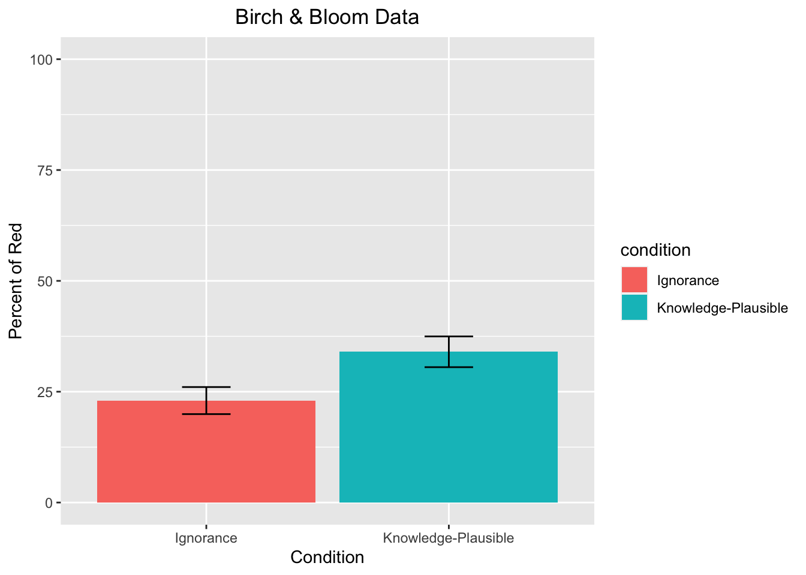
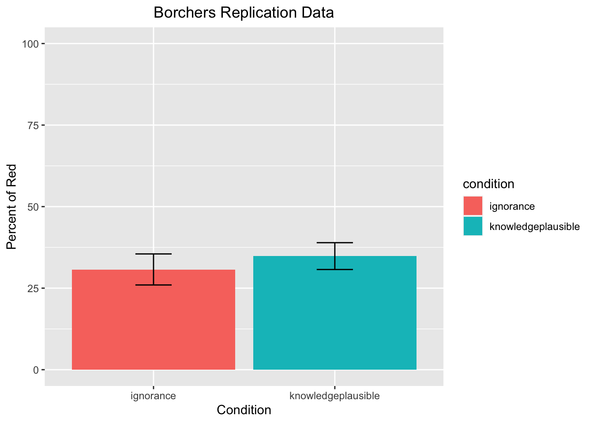

Replication of Study ‘The curse of knowledge in reasoning about false beliefs’ by Susan A. J. Birch and Paul Bloom (2007, Psychological Science)
Author
Adani B. Abutto (Email: aabutto@stanford.edu)
Published
December 3, 2023
Introduction
My main research interest lies in examining how human reasoning about various aspects of the physical world external to us (what’s “out there”) and the mental world(s) internal to us (what’s “in here”) arises, progresses, and interplays throughout development. Birch and Bloom’s (2007) work looks at how adults reason about other people and their (false) knowledge about the world, and whether adults’ struggles in “belief reasoning” are akin to children’s when sufficiently sensitive measures are used. Squarely in line with my own interests, this line of inquiry addresses the interplay between social cognition and reasoning about the world, focusing on potential differences (and continuities) between child- and adulthood in the related cognitive competencies.
Birch and Bloom (2007) reported results indicating that young adults’ (N = 155 college students) reasoning about another person’s (false) belief about the world can indeed be compromised by manipulating their knowledge about an event’s outcome as well as the plausibility of the event in question. Their experimental study employed a simple four-step procedure, using a modified version of a classic displacement task (see, e.g., Wimmer & Perner, 1983).
Figure 1.
Figure taken from Birch and Bloom (2007); questionnaire item prompting participants to respond by indicating probabilities between 0 and 100. Color-word labels (red, green, purple, blue) were included in the journal article for interpretability and not shown to study participants.
Figure 1 shows the task as presented to participants in one of the three experimental conditions. The procedure was highly similar across conditions: In the first step, all participants were shown a picture of a girl, Vicki, holding a violin in a living room with a sofa and four containers of different colors. Participants were then told that once Vicki finished playing, she placed her violin in a blue container and goes outside playing. Thereafter, participants were shown a text and picture conveying that Vicki’s sister, Denise, came in, moved the violin, and rearranged the colored containers. To this end, participants were shown another short text, this time varying by experimental condition: “While Vicki is outside playing, her sister, Denise moves the violin to […]”
Ignorance condition: “[…] another container.” (no additional information)
Knowledge-plausible condition: “[…] the red container.” (different container but physical location held constant)
Knowledge-implausible condition: “[…] the purple container.” (different container and different physical location)
Then, upon conclusion of the story, participants were asked to respond to a single question: “When Vicki returns, she wants to play her violin. What are the chances Vicki will first look for her violin in each of the [colored] containers?” Respondents were asked to give their answers in percentages by filling out four separate response fields (i.e., one for each of the four containers).
Given that the study involved only simple text and picture material as well as a single-page questionnaire, I do not anticipate any major challenges in the reproduction and use of study materials. I expect that all experimental manipulations, respondent instructions, and measures can be administered without issue by using Qualtrics’ in-built survey functions. Notably, however, it seems that Birch and Bloom (2007) administered their questionnaire in physical form. It is possible that when using the Qualtrics platform, it is not achievable to display the figure text and probability response fields in the exact same layout as in the original study (e.g., field size and location) .
However, this slight limitation in replicating the study materials should not impact the overall replication quality in fundamental ways. Indeed, in light of the COVID-19 pandemic, numerous researchers have started creating and employing digital versions of classic “theory of mind” (ToM) tasks that have typically been administered in person. The findings of such online studies (e.g., in terms of task success rates by age bracket) are generally comparable to the findings of the corresponding in-person research (see Livingston et al., 2021, for an example).
There are three notable differences between the original study (Birch & Bloom, 2007) and the replication study (Borchers, 2018; https://rpubs.com/lrborchers/450894). The first lies in the replication study omitting one of the three experimental conditions (knowledge-implausible). Borchers justifies this in pointing out that the authors did not report significant differences between the knowledge-plausible group and the ignorance group. However, given that Birch and Bloom (2007) did report a lack of a difference between the ignorance and knowledge-implausible groups as one of two key findings — indicating that knowledge alone does not appear to be the sole factor biasing adults’ false-belief reasoning —, I plan to diverge from Borchers’ approach and include this condition in the present study.
Second, the sample of the original study consisted of undergraduate students at Yale, whereas Borchers’ sample consisted of MTurk workers. Borchers did ask respondents to indicate their education levels but remarked that given this circumstance, there would likely be a difference in education between the original group and the MTurk sample.
Third, Borchers’ study was conducted online rather than in person, which meant that stimuli had to be adapted and were not perfectly equivalent to the original materials. It should also be noted that Borchers asked participants whether they were colorblind and excluded people in this category — Birch and Bloom did not report whether they did so.
Finally, Borchers raised a crucial issue prior to her data collection: Given that participants were asked to write down their probability estimates in a simple text box, it was possible for them to make typing or calculation errors, resulting in the sum of all response fields to add up to less (or more) than 100%. Indeed, in Borcher’s data, there were n = 8 such cases (n = 4 in each condition). Borchers reported that she thus conducted her analysis twice — once including these cases, and once excluding them — and that the results did not differ across subsamples. Nevertheless, this circumstance led to a slight reduction in her sample size and statistical power. The present study will avoid this by integrating an input check in the survey (e.g., having a message pop up on the respective Qualtrics page if respondents’ probability values don’t add up to 100%).
Methods
Power Analysis
The original effect size Birch & Bloom (2007) reported was d = 0.472 (t(105) = -2.42, \(p_{rep}\) = .95). Notably, neither Bridgers (n.d.) nor Borchers (2018) replicated the main effect: t(149.58) = -1.20, p = 0.231, and t(70.25) = -0.65, p = .518, respectively. In the former case, the sample size (N = 225) considerably exceeded that of the original authors (N = 155).
In replicating the study, Borchers (2018) ran an a-priori power analysis and reported that “[we] would need 24 participants per condition to achieve 80% power, 32 participants per condition to achieve 90% power, and 40 participants per condition to achieve 95% power.”
However, in the earlier replication by Bridgers (n.d.), it was reported that “[…] to detect [the original] effect size with 80%, 90%, and 95% power, the sample size would need to be 71 participants per condition, 95 participants per condition, or 118 participants per condition, respectively.”
In re-running the above power analysis, I found that required sample sizes would indeed be 71, 95, and 118 per condition to achieve 80%, 90%, and 95% power, respectively:
power.t.test(delta = .472, sd =1, sig.level =0.05, power = .80,type ="two.sample",alternative ="two.sided") # 80% power
Two-sample t test power calculation
n = 71.43496
delta = 0.472
sd = 1
sig.level = 0.05
power = 0.8
alternative = two.sided
NOTE: n is number in *each* group
power.t.test(delta = .472, sd =1, sig.level =0.05, power = .90,type ="two.sample",alternative ="two.sided") # 90% power
Two-sample t test power calculation
n = 95.29902
delta = 0.472
sd = 1
sig.level = 0.05
power = 0.9
alternative = two.sided
NOTE: n is number in *each* group
power.t.test(delta = .472, sd =1, sig.level =0.05, power = .95,type ="two.sample",alternative ="two.sided") # 95% power
Two-sample t test power calculation
n = 117.6266
delta = 0.472
sd = 1
sig.level = 0.05
power = 0.95
alternative = two.sided
NOTE: n is number in *each* group
Unfortunately, there exists no meta-analysis that could provide a (more) precise estimate of the population effect size, and the pilot data obtained as part of the present data is too noisy as to be informative (N < 10, non-naive participants). In short, I do not have strong prior information about the likely effect size.
Given all of the above, I will follow Simonsohn’s (2014) recommendation of “[obtaining] 2.5 times as many observations as the original study to obtain about 80% power to reject a detectable effect,” (p. 14) if the true effect is zero. Thus, \(N_{planned}=N_{original}*2.5 = 155*2.5=387\).
Given that the survey is estimated to take only a few minutes, and using an hourly pay of $10, I anticipate it to be feasible to recruit a sample size of N = 387 while staying within budget (\(N_{planned}*pay = 387*(\frac{10}{60}*\$3)=\$194\)).
With N = 387, assuming an attenuated effect that is half the size of the original (d = 0.236), power will be ~60% (one-sided test):
power.t.test(delta = .236, n =129, sd =1, sig.level =0.05, power =NULL,type ="two.sample",alternative ="one.sided")
Two-sample t test power calculation
n = 129
delta = 0.236
sd = 1
sig.level = 0.05
power = 0.5969635
alternative = one.sided
NOTE: n is number in *each* group
Figure 2 below shows a more comprehensive overview of the interplay between effect size and required sample size:
Figure 2.
Note. Graph generated in G*Power: Required sample size to detect a given effect of size d with 80% power.
Planned Sample
To achieve similar education-level demographics as Birch and Bloom (2007), I will recruit only adults enrolled in college. Furthermore, I will pre-screen for colorblindness and exclude respondents in this category from participation. I will also pre-screen for Prolific respondents with high approval rates (indicating that their participation in previous Prolific studies was of high quality).
Based on the considerations above, I propose to recruit N = 387 participants (n = 129 per condition) and will terminate data collection once this number was reached.
Materials
Materials will be employed as reported by Borchers: “This study [will use] a colored figure depicting Vicki, her violin, a sofa, and four containers (ordered: blue, purple, red, green) on the top panel and her sister, the violin, a sofa, and the containers (reordered: red, green, purple, blue) on the bottom panel. All participants [will be] shown the following text (manipulations shown in brackets): ’This is Vicki. She finishes playing her violin and puts it in the blue container. Then she goes outside to play. While Vicki is outside playing, her sister, Denise, moves the violin…
[ignorance] …to another container
[knowledge-plausible] …to the red container (occupying original location)
[knowledge-implausible] …to the purple container (occupying location different from original)
Then Denise rearranges the containers in the room until the room looks like the picture below. When Vicki returns, she wants to play her violin. What are the chances Vicki will first look for her violin in each of the above containers? Write your answers in percentages in the spaces provided under each container.’ All participants will receive the same figure with modifications to the text according to their condition (described above).”
Given that the materials made available by Birch and Bloom’s (2007) are black-and-white, I contacted Borchers to obtain her colored figure. I’m currently awaiting a response.
Procedure
Procedure will largely match that of Borchers: “[I will employ] a between-subjects design and participants will be randomly assigned to the ignorance or knowledge-plausible condition at the beginning of the study. After reading the corresponding prompt, all participants will report on their perceived probability that Vicki will look in each of the four containers for her violin.” The main difference is that the present study includes all three conditions used by Birch and Bloom (2007) rather than merely knowledge-plausible and ignorance as in Borchers (2018). Additionally, I formatted response fields to be displayed side-by-side right beneath the experimental manipulation figure, and moved demographic questions to the very end of the study.
Controls
In addition to pre-screening for Prolific respondents with high approval rates, I will include a response check ensuring that participants’ probability estimates add up to (roughly) 100% across the four response fields. No other control measures will be used.
The main analysis of interest is the comparison between the ignorance and knowledge-plausible groups in terms of their reported probability for Vicky to look for her violin in the “red container” (i.e., the container residing in the same physical location as where Vicki originally placed the violin). The hypothesis — in line with the effect reported by Birch and Bloom (2007), but contrary to Borchers (2018) — is that, on average, participants in the knowledge-plausible group will report significantly higher probabilities that Vicky will look in the “red container” than participants in the ignorance condition. This is because in the knowledge-plausible condition, participants’ prior knowledge of the event outcome (that the violin was placed in the “red container”) in combination with the plausibility of the event (that Vicky will look in the “red container” because after rearrangement of the room, it is in the same physical location as the “blue container,” which is where she put her violin originally) is thought to interfere with their ability to reason from Vicky’s (unknowing) perspective.
To test for (the replication of) this effect, I will conduct an independent sample t-test, matching the procedure followed both by Borchers (2018) and Birch and Bloom (2007). Additionally, I will conduct three more independent samples t-tests: One to compare the reported probability for the “red container” between the ignorance and knowledge-implausible groups, another to compare ignorance and knowledge-plausible on their “blue container” probability judgments, and a final one to compare ignorance and knowledge-implausible groups on their “blue container” probability judgments. For all of the above comparisons of means, Cohen’s d will also be calculated.
Differences from Original Study and 1st replication
Birch and Bloom’s (2007) study was conducted in person, and Borchers (2018) conducted her study on MTurk. The present study will differ from both in that it will be run on Qualtrics (http://qualtrics.com/), with the sample being recruited from Prolific (https://prolific.co/). The number of participants per condition will exceed that of Borchers (N = 70) as well as Birch and Bloom (N = 155 total, but exact n per condition unknown). The setting and procedure will match that of Borchers and deviate from Birch and Bloom (2007) in being set online rather than in person. The present analysis plan matches that of both prior studies. None of the above is anticipated to make a crucial difference in the effect estimation.
Methods Addendum (Post Data Collection)
You can comment this section out prior to final report with data collection.
Actual Sample
Sample size, demographics, data exclusions based on rules spelled out in analysis plan
Differences from pre-data collection methods plan
Any differences from what was described as the original plan, or “none”.
Results
Data preparation
I will take the following steps to prepare the data for analysis:
Export .csv file from Qualtrics
Load relevant libraries in R (tidyverse for cleaning, ggplot2 for plotting, car for t-tests, effsize for Cohen’s d)
Exclude participants who are colorblind and/or did not give consent and/or are not high school graduates (if pre-screener ends up being not possible/fails)
pilot_a_data_tidy = pilot_a_data_tidy %>%filter(high_school =="Yes", # Completed high school colorblindness =="No", # Not colorblind consent_form =="I agree") # Consented to the studypilot_b_data_tidy = pilot_b_data_tidy %>%filter(high_school =="Yes", # Completed high school colorblindness =="No", # Not colorblind consent_form =="I agree") # Consented to the study
Run descriptive statistics (N, M, SD) for participants who entered probability values that sum up to less or more than 100 (despite the response check)
Exclude participants who entered probability values that sum up to less or more than 100 (despite the response check)
Exclude participants with missing probability values (despite the response check)
Confirmatory analysis
I will conduct the confirmatory analysis as follows:
Descriptive Statistics
To be added later: Run descriptive statistics (N, M, SD) for probability judgments for all four containers (red, blue, green, purple) by condition (ignorant, knowledge-implausible, knowledge-implausible)
Independent sample t-tests (Welch’s)
Comparing Ignorant vs knowledge-plausible: Probability judgments for “red container”
Pilot A data:
t.test(red ~ condition, data = pilot_a_data_final[pilot_a_data_final$condition!="knowimplausible",]) # Target replication
Welch Two Sample t-test
data: red by condition
t = -1.1262, df = 2.6327, p-value = 0.3522
alternative hypothesis: true difference in means between group ignorance and group knowplausible is not equal to 0
95 percent confidence interval:
-144.21563 73.21563
sample estimates:
mean in group ignorance mean in group knowplausible
12.5 48.0
Pilot B data:
t.test(red ~ condition, data = pilot_b_data_final[pilot_b_data_final$condition!="knowimplausible",]) # Target replication
Welch Two Sample t-test
data: red by condition
t = 0.24012, df = 6.4544, p-value = 0.8177
alternative hypothesis: true difference in means between group ignorance and group knowplausible is not equal to 0
95 percent confidence interval:
-36.07592 44.07592
sample estimates:
mean in group ignorance mean in group knowplausible
31 27
Comparing Ignorant vs knowledge-plausible: Probability judgments for “blue container”
Pilot A data:
t.test(blue ~ condition, data = pilot_a_data_final[pilot_a_data_final$condition!="knowimplausible",])
Welch Two Sample t-test
data: blue by condition
t = -0.090086, df = 2.4222, p-value = 0.9351
alternative hypothesis: true difference in means between group ignorance and group knowplausible is not equal to 0
95 percent confidence interval:
-187.2337 178.2337
sample estimates:
mean in group ignorance mean in group knowplausible
62.5 67.0
Pilot B data:
t.test(blue ~ condition, data = pilot_b_data_final[pilot_b_data_final$condition!="knowimplausible",])
Welch Two Sample t-test
data: blue by condition
t = -0.74384, df = 6.7108, p-value = 0.4822
alternative hypothesis: true difference in means between group ignorance and group knowplausible is not equal to 0
95 percent confidence interval:
-80.98301 42.48301
sample estimates:
mean in group ignorance mean in group knowplausible
42.00 61.25
Comparing ignorant vs knowledge-implausible: Probability judgments for “red container”
Pilot A data:
t.test(red ~ condition, data = pilot_a_data_final[pilot_a_data_final$condition!="knowplausible",])
Welch Two Sample t-test
data: red by condition
t = -1.0563, df = 1.5259, p-value = 0.4295
alternative hypothesis: true difference in means between group ignorance and group knowimplausible is not equal to 0
95 percent confidence interval:
-96.79371 67.29371
sample estimates:
mean in group ignorance mean in group knowimplausible
12.50 27.25
Pilot B data:
t.test(red ~ condition, data = pilot_b_data_final[pilot_b_data_final$condition!="knowplausible",])
Welch Two Sample t-test
data: red by condition
t = 0.11692, df = 5.8692, p-value = 0.9108
alternative hypothesis: true difference in means between group ignorance and group knowimplausible is not equal to 0
95 percent confidence interval:
-36.74241 40.40907
sample estimates:
mean in group ignorance mean in group knowimplausible
31.00000 29.16667
Comparing ignorant vs knowledge-implausible: Probability judgments for “blue container”
Pilot A data:
t.test(blue ~ condition, data = pilot_a_data_final[pilot_a_data_final$condition!="knowplausible",])
Welch Two Sample t-test
data: blue by condition
t = 0.78462, df = 1.2272, p-value = 0.5557
alternative hypothesis: true difference in means between group ignorance and group knowimplausible is not equal to 0
95 percent confidence interval:
-296.835 358.835
sample estimates:
mean in group ignorance mean in group knowimplausible
62.5 31.5
Pilot B data:
t.test(blue ~ condition, data = pilot_b_data_final[pilot_b_data_final$condition!="knowplausible",])
Welch Two Sample t-test
data: blue by condition
t = -0.42132, df = 6.8015, p-value = 0.6865
alternative hypothesis: true difference in means between group ignorance and group knowimplausible is not equal to 0
95 percent confidence interval:
-69.78056 48.78056
sample estimates:
mean in group ignorance mean in group knowimplausible
42.0 52.5
Graphical Comparison
Creating a graph comparing mean difference in probability judgments for “red container” between the ignorant and knowledge-plausible groups across the original study (Birch & Bloom, 2007), 1st replication (Borchers, 2018), and the present study.
Birch & Bloom (2007) Data Plot

Previous Replication Data Plot (Borchers)
No summary function supplied, defaulting to `mean_se()`

Pilot A Data Plot (N = 10)
pilot_a_data_tidy %>%filter(color=="red"& condition !="knowimplausible") %>%ggplot() +aes(x=condition, y=probability_pct, fill=condition) +stat_summary(geom="bar") +stat_summary(geom="errorbar", width =0.2, fun.data=mean_se) +xlab("Condition") +ylab("Percent of Red") +ggtitle("Pilot A Data Replicating Borcher") +scale_color_hue(labels=c("Ignorance", "Knowledge-plausible")) +theme(plot.title=element_text(hjust=.5)) +ylim(0,100)
Combining across the original paper, 1st replication, and 2nd replication, what is the aggregate effect size?
Summary of Replication Attempt
Open the discussion section with a paragraph summarizing the primary result from the confirmatory analysis and the assessment of whether it replicated, partially replicated, or failed to replicate the original result.
Commentary
Add open-ended commentary (if any) reflecting (a) insights from follow-up exploratory analysis, (b) assessment of the meaning of the replication (or not) - e.g., for a failure to replicate, are the differences between original and present study ones that definitely, plausibly, or are unlikely to have been moderators of the result, and (c) discussion of any objections or challenges raised by the current and original authors about the replication attempt. None of these need to be long.